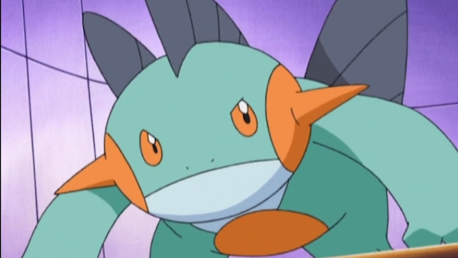
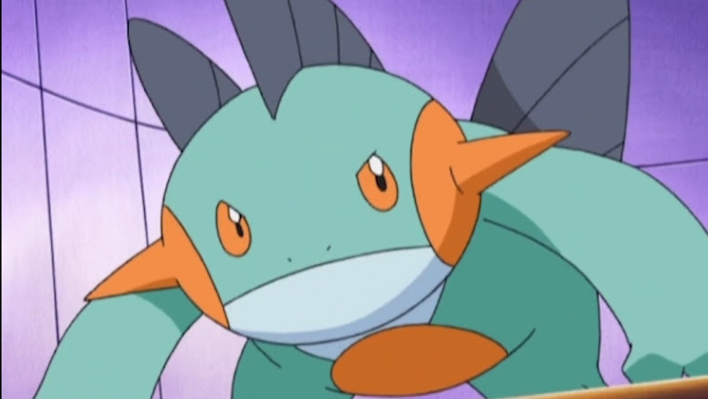

Brock de Pewter
Informações gerais
Brock é originalmente o líder do ginásio de Pewter City Gym,
mas ele decidiu seguir seu sonho de se tornar o maior criador de Pokémon.
Após sua derrota contra Ash Ketchum , ele rapidamente desistiu de seu título.
Ele acompanhou Ash em sua jornada por algum tempo,
enquanto tentava viver de acordo com seu objetivo.
Ele atualmente deseja ser um grande Pokémon Doctor. Ele viajou com Ash de Kanto a Sinnoh.
- Idade: 15 anos;
- Ocupações: Treinador Pokemon/ Criador Pokemon (Pokémon Doctor em ascensão)
- Família:
- Flint (pai)
- Lola (mãe)
- Forrest (irmão)
- Salvador (irmão)
- Yolanda (irmã)
- Suzie (irmã)
- Timmy (irmão)
- Tommy (irmão)
- Cindy (irmã)
- Os gêmeos, Tilly e Billy (irmãos)
Pokémons de Brock
Assim como todo treinador pokemon que se preze,
colecionou alguns pokémons ao longo de sua jornada,
alguns de seus melhores amigos são respectivamente, Chancey, Comfey, Croagunk, Crobat, Forretress,
Geodude, Ludicolo, Marshtomp, Steelix e Sudowoodo.
 


Rimando com Pokémons